9 りうむ
9/910｜2026/05/09
4MNCZ
多了哪些牌
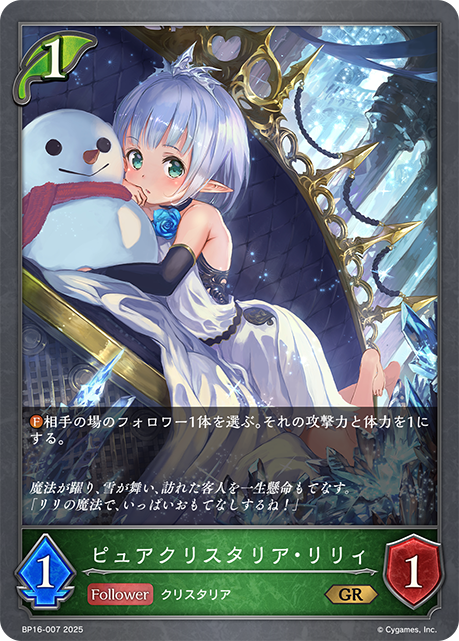
+1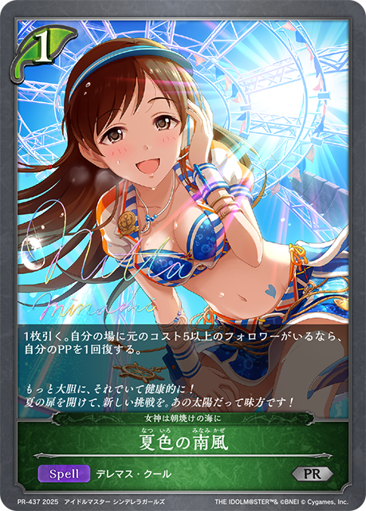
+1少了哪些牌
-1-1
 主BP01-015/ETD03-008/PR-003/PR-223：自然の導き主卡组 × 3
主BP01-015/ETD03-008/PR-003/PR-223：自然の導き主卡组 × 3 主BP04-010/BP04-P02：小さな勇士・スクナ主卡组 × 3
主BP04-010/BP04-P02：小さな勇士・スクナ主卡组 × 3 主BP11-003/BP11-SL03/BP11-U01：優美な猫姉妹・シャム＆シャマ主卡组 × 3
主BP11-003/BP11-SL03/BP11-U01：優美な猫姉妹・シャム＆シャマ主卡组 × 3 主BP17-001/BP17-SL01/BP17-U01：深緑の弓使い・アリサ主卡组 × 3
主BP17-001/BP17-SL01/BP17-U01：深緑の弓使い・アリサ主卡组 × 3 主BP18-007/BP18-P03：アクティブエルフ・メイ主卡组 × 2
主BP18-007/BP18-P03：アクティブエルフ・メイ主卡组 × 2 主BP18-019/PR-529：対空射撃主卡组 × 3
主BP18-019/PR-529：対空射撃主卡组 × 3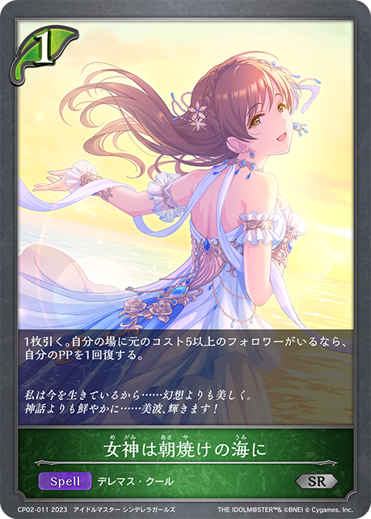
主CP02-011/CP02-P08：女神は朝焼けの海に主卡组 × 1 主BP05-109/PR-128/SP01-051/SP01-SL51：爆砕の傭兵・フィーナ主卡组 × 3
主BP05-109/PR-128/SP01-051/SP01-SL51：爆砕の傭兵・フィーナ主卡组 × 3 主BP10-005/PR-483：マドロスエルフ主卡组 × 3
主BP10-005/PR-483：マドロスエルフ主卡组 × 3 主BP18-004/BP18-SL04/PR-509：ロイヤルクリスタリア・ティア主卡组 × 3
主BP18-004/BP18-SL04/PR-509：ロイヤルクリスタリア・ティア主卡组 × 3 主BP19-001/BP19-SL01/PR-528：剪定の咎人・マガチヨ主卡组 × 2
主BP19-001/BP19-SL01/PR-528：剪定の咎人・マガチヨ主卡组 × 2 主SP01-045/SP01-SL45/SP01-SP30/SP01-SP31/SP01-U28：不思議な青空・アリス主卡组 × 3
主SP01-045/SP01-SL45/SP01-SP30/SP01-SP31/SP01-U28：不思議な青空・アリス主卡组 × 3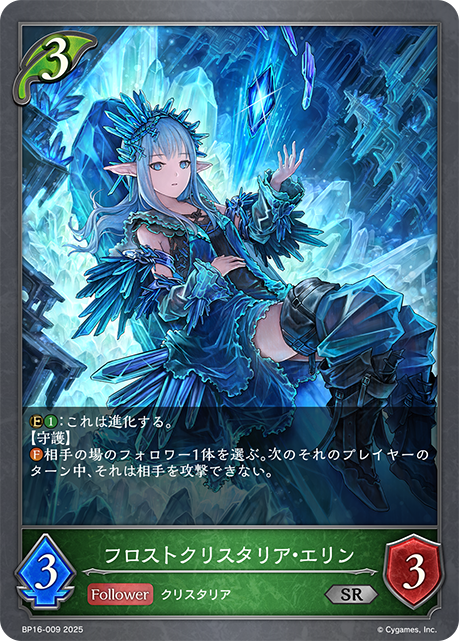
主BP16-009：フロストクリスタリア・エリン主卡组 × 3 主ECP02-004/ECP02-SL04：〔渚の花嫁〕新田美波主卡组 × 3
主ECP02-004/ECP02-SL04：〔渚の花嫁〕新田美波主卡组 × 3 主CP02-006/CP02-P03/CP02-SP02/CP02-U02/PR-435：アナスタシア主卡组 × 2
主CP02-006/CP02-P03/CP02-SP02/CP02-U02/PR-435：アナスタシア主卡组 × 2 进BP04-011/BP04-P03：小さな勇士・スクナ进化 × 3
进BP04-011/BP04-P03：小さな勇士・スクナ进化 × 3 进BP10-006/PR-484：マドロスエルフ进化 × 3
进BP10-006/PR-484：マドロスエルフ进化 × 3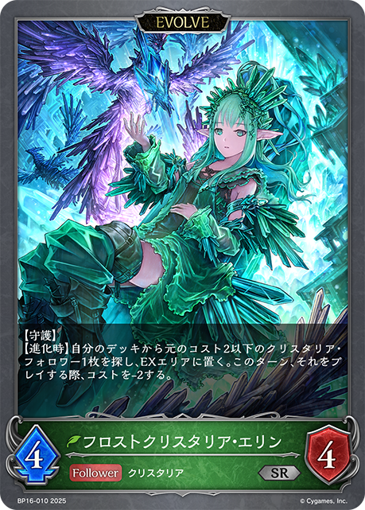
进BP16-010：フロストクリスタリア・エリン进化 × 2 进BP19-002/BP19-SL02/BP19-U01：剪定の咎人・マガチヨ进化 × 2
进BP19-002/BP19-SL02/BP19-U01：剪定の咎人・マガチヨ进化 × 2
+1
+1 +1
+1 +1+1
+1+1 +1-1-1-1
+1-1-1-1 +3
+3 +2+1-2-2-1-1-1-1
+2+1-2-2-1-1-1-1 +3
+3 +2+1-2-2-1-1+3+2+1-2-2-1-1+1+1-1-1+2+2-1-1-1-1
+2+1-2-2-1-1+3+2+1-2-2-1-1+1+1-1-1+2+2-1-1-1-1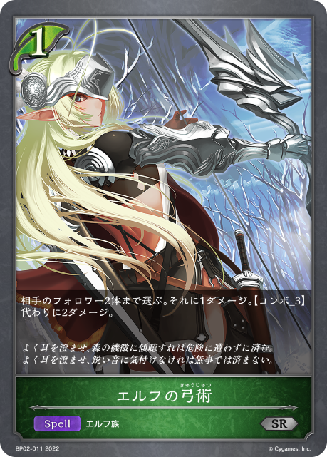
+1+2+2+1+1-2-2-1-1+2+2+2-2-2-1-1+2+2+1+1-2-2-1-1+3+2+1-2-2-1-1+2+2+1-2-2-1 +3
+3 +2
+2 +2-2-2-2-1+3+2+1-2-2-1-1+3+3-2-2-1-1+2+2+1-2-2-1+2+2+2+1+1+1+1-2-2-2-1-1-1-1+2+2+1+1+1-2-2-1-1-1+2+2+1-2-2-1+1-2+1+1+1-1-1-1
+2-2-2-2-1+3+2+1-2-2-1-1+3+3-2-2-1-1+2+2+1-2-2-1+2+2+2+1+1+1+1-2-2-2-1-1-1-1+2+2+1+1+1-2-2-1-1-1+2+2+1-2-2-1+1-2+1+1+1-1-1-1 +3
+3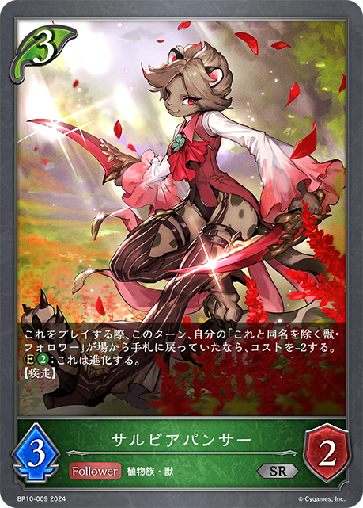
+3+3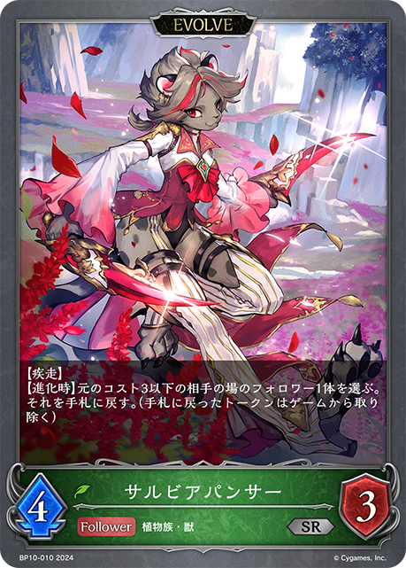
+2+2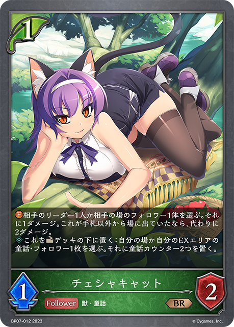
+2+1-3-2-2-2-2-1-1+2+2+1+1+1-2-2-1-1-1+2+1+1+1+1-2-2-1-1+1+1+1-1-1-1+2+1+1-1-1-1-1+2+2+1-2-2-1+3+3+2+2+2+2+1-3-2-2-2-1-1-1+2+2+1-2-2-1+3+2+1-2-2-1-1+2+2+2+1+1-2-2-1-1-1-1+1+1+1+1-1-1-1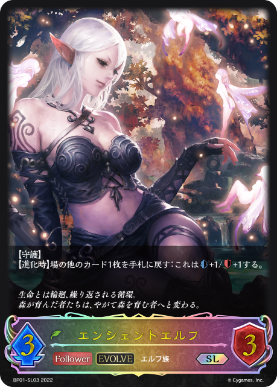
+3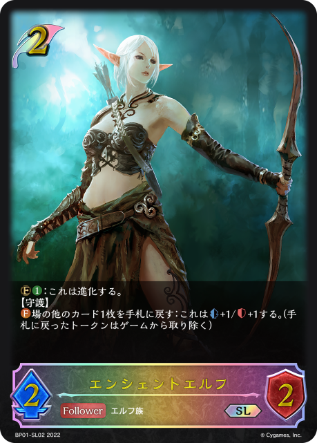
+3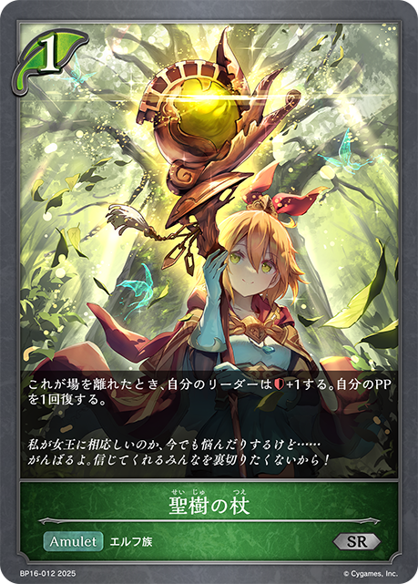
+3 +2+2
+2+2 +2
+2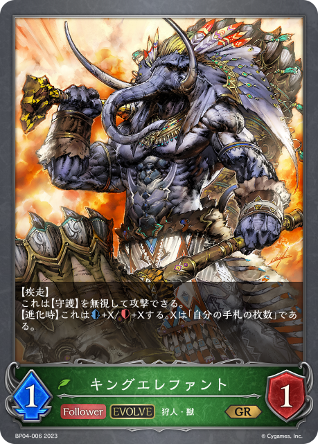
+1+1+1-3-3-3-3-2-2-1-1+2+1+1-1-1-1-1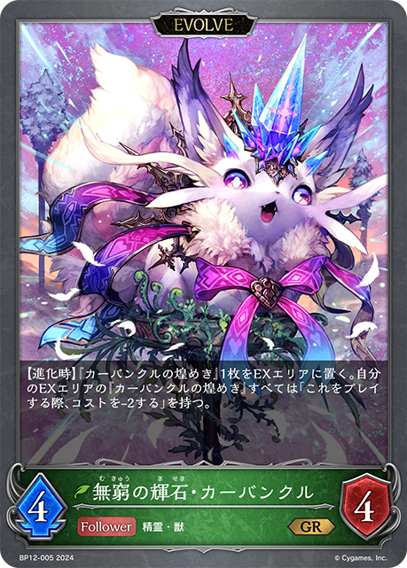
+2 +2+1-2-2-1+2+2+2+1+1-2-2-1-1-1-1
+2+1-2-2-1+2+2+2+1+1-2-2-1-1-1-1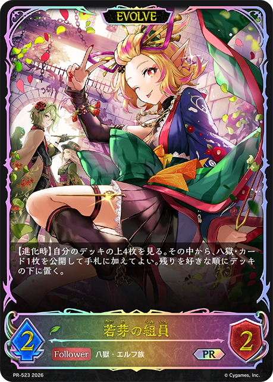
+3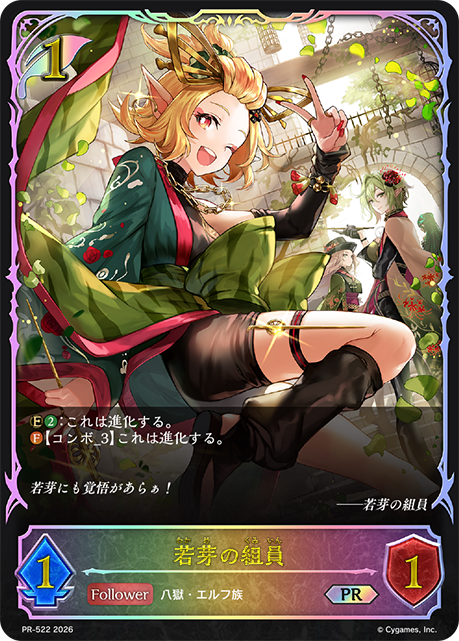
+3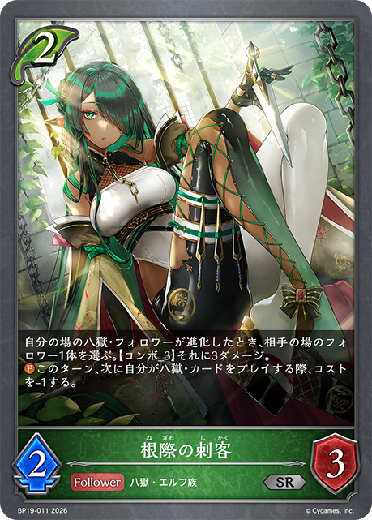
+3 +2
+2 +1+1
+1+1 +1
+1 +1-3-2-2-1-1-1-1-1+2+2+1-1-1-1-1-1+2+2+1-2-2-1+3+2+1+1-2-2-1-1-1
+1-3-2-2-1-1-1-1-1+2+2+1-1-1-1-1-1+2+2+1-2-2-1+3+2+1+1-2-2-1-1-1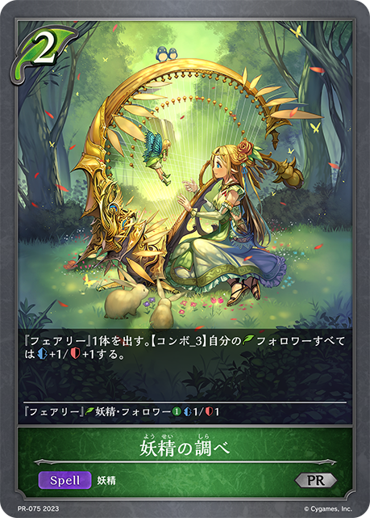
+1+2+2+1-2-2-1+3+2+1-3-1-1-1+3+2+1-2-2-1-1+2+2+1+1+1-2-2-1-1-1+1+1+1+1-1-1-1-1+1+1+1+1-1-1-1-1+1+1+1-1-1-1+3+3+2+2+1+1-2-2-1-1-1+3+2+1-2-2-1-1+2+2+2+2+2+1-3-2-1-1-1+2+2-1-1-1-1+2+1+1+1-1-1-1-1-1 +2+2
+2+2 +1+1+1-2-2-2-1+3+2+2-2-2-1-1-1+2+2+1+1-2-2-1-1+1+1+1+1-1-1-1+3+2+1-2-2-1-1+2+2+1-1-1-1-1-1+2+1+1+1-3-2-2-1-1-1-1+1+1-1-1+1+1+1-1-1-1+3+2+2+2+2+1-3-2-2-2-1-1-1+2+2
+1+1+1-2-2-2-1+3+2+2-2-2-1-1-1+2+2+1+1-2-2-1-1+1+1+1+1-1-1-1+3+2+1-2-2-1-1+2+2+1-1-1-1-1-1+2+1+1+1-3-2-2-1-1-1-1+1+1-1-1+1+1+1-1-1-1+3+2+2+2+2+1-3-2-2-2-1-1-1+2+2 +2+1-2-2-1-1-1+2+2+1-2-2-1+2+2+1-2-2-1+3+3+2+1+1+1+1+1-3-2-2-2-1+3+2
+2+1-2-2-1-1-1+2+2+1-2-2-1+2+2+1-2-2-1+3+3+2+1+1+1+1+1-3-2-2-2-1+3+2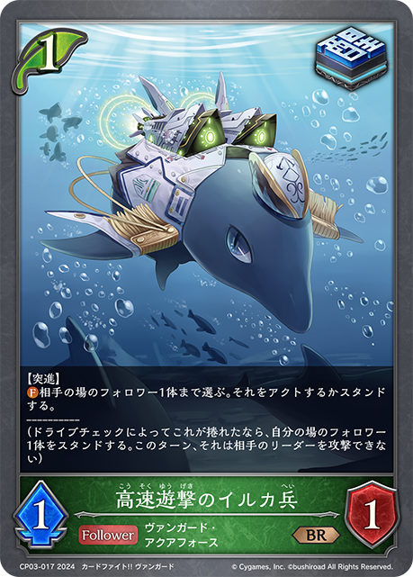
+2+1+1+1+1-3-2-2-2-1-1+2+2+2+1+1+1-3-3-3-3-2-2-1-1+2+2-1-1-1-1+2+2+1+1+1-2-2-1-1-1+2+2+1-2-2-1+3+2+1+1+1-2-2-1-1-1-1+2+2+1-2-1-1-1+2+2+1-1-1-1-1-1+2+2+1-2-2-1 +1
+1 +1+1-1-1-1+2+2+1+1+1-2-2-1-1-1+3+2+1-2-2-1-1+2+2+1-2-2-1+2+2+1-2-2-1+2+2+1-2-2-1+2+2-2-2+3+2+1+1+1-2-2-1-1-1-1-1-1-1+2+2+1-2-2-1+1+1+1+1+1-1-1-1-1+3+2+1-2-2-1-1+2+2+1+1-2-2-1-1+2+2+1-2-2-1+2+1+1-1-1-1-1+3+2+2+1+1-2-2-2-1-1-1
+1+1-1-1-1+2+2+1+1+1-2-2-1-1-1+3+2+1-2-2-1-1+2+2+1-2-2-1+2+2+1-2-2-1+2+2+1-2-2-1+2+2-2-2+3+2+1+1+1-2-2-1-1-1-1-1-1-1+2+2+1-2-2-1+1+1+1+1+1-1-1-1-1+3+2+1-2-2-1-1+2+2+1+1-2-2-1-1+2+2+1-2-2-1+2+1+1-1-1-1-1+3+2+2+1+1-2-2-2-1-1-1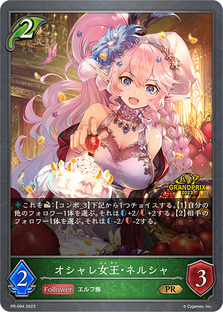
+1+1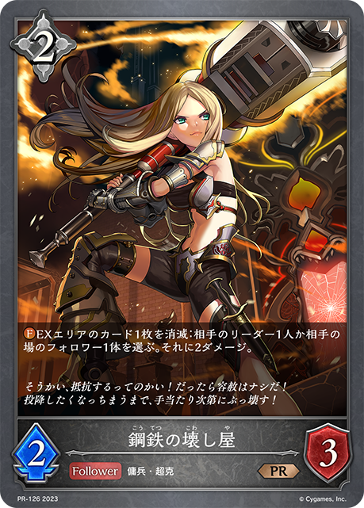
+1+1-1-1+2+1+1+1+1+1-2-1-1-1-1+2+2+2+2+1-2-2-1-1-1-1-1+1+1+1+1-1-1-1-1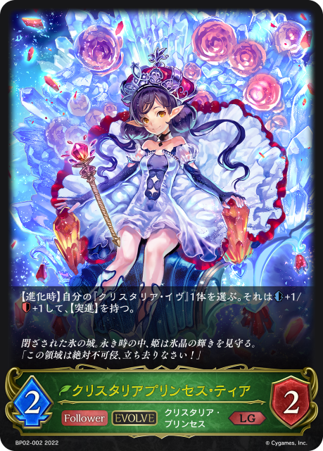
+1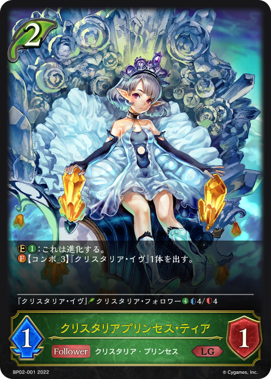
+1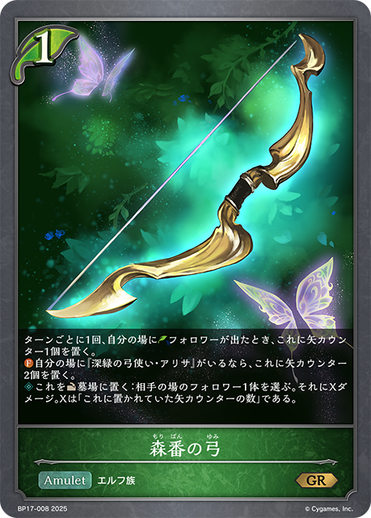
+1-1-1-1+1+1-1-1+2+2+1-2-2-1 +2+2-3-1+2+2+1+1-2-2-1-1+2+2+1+1-2-2-1-1+3+3+3+2+2+1+1+1+1-3-3-3-2-2-1-1-1-1+2+2+1+1+1-2-2-1-1-1+2+2+1-2-2-1+3+3+2+2+2+1-3-2-2-2-1+3+2+1-1-1-1-1-1-1+3+2+2-2-2-2-1+3+2+1-1-1-1-1-1-1+2+1+1-3-3-3-3-1-1+2+2+1+1-2-2-1-1+3+2-2-2-1+2+1+1+1-3-2-2-1-1-1-1+3+2+2+1-3-1-1-1-1-1+2+2+2+2+1-2-2-2-1-1-1
+2+2-3-1+2+2+1+1-2-2-1-1+2+2+1+1-2-2-1-1+3+3+3+2+2+1+1+1+1-3-3-3-2-2-1-1-1-1+2+2+1+1+1-2-2-1-1-1+2+2+1-2-2-1+3+3+2+2+2+1-3-2-2-2-1+3+2+1-1-1-1-1-1-1+3+2+2-2-2-2-1+3+2+1-1-1-1-1-1-1+2+1+1-3-3-3-3-1-1+2+2+1+1-2-2-1-1+3+2-2-2-1+2+1+1+1-3-2-2-1-1-1-1+3+2+2+1-3-1-1-1-1-1+2+2+2+2+1-2-2-2-1-1-1 +3
+3 +2+2
+2+2 +2+2
+2+2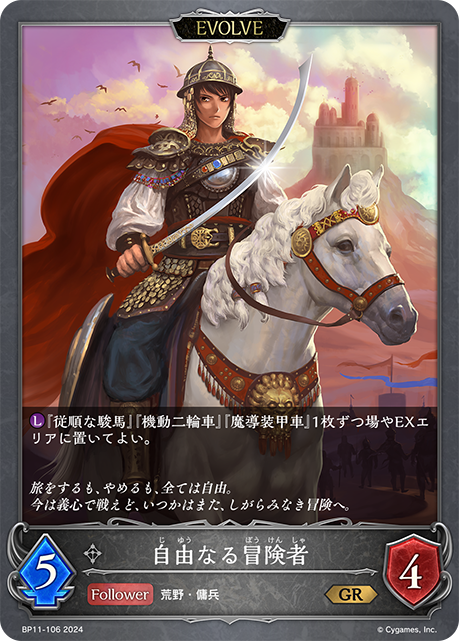
+1+1+1-3-3-2-2-2-1-1+1+1+1-1-1-1+3+1-2-1-1+1-1-1+1+1+1-1-1-1+3+2+1-2-2-1-1+2+2+1-2-2-1+3+2+1-2-2-1-1+2+2+1+1-2-2-1-1+2+2+1-2-2-1+2+2+2+2+1-2-2-1-1-1-1-1+1+1+1-1-1-1+1+1+1+1-2-1-1+3+2+1-2-2-1-1+3+2+2+2+1-2-2-2-1-1-1-1+3+2+1-2-2-1-1+1+1+1-1-1-1+2+2+1+1-2-2-1-1+1+1-1-1+3 +3+2+1-3-2-1+2+2+1+1+1-2-2-1-1-1+2+2+2+2+1-2-2-1-1-1-1-1+2+2+1+1+1+1-2-2-2-1-1+3+3+3+2+2-3-2-2-2-1+2+2+1-2-2-1+3+2+1-2-2-1-1
+3+2+1-3-2-1+2+2+1+1+1-2-2-1-1-1+2+2+2+2+1-2-2-1-1-1-1-1+2+2+1+1+1+1-2-2-2-1-1+3+3+3+2+2-3-2-2-2-1+2+2+1-2-2-1+3+2+1-2-2-1-1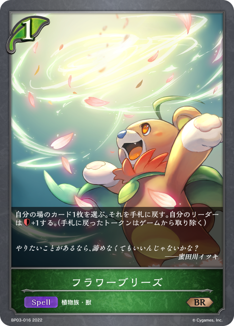
+1+1+2+2+1-2-2-1+2+2+1-2-2-1+2+2+2+1+1-2-2-1-1-1-1+3+2+2+1+1-2-2-2-1-1-1+2+2+2+2+1-2-2-2-1-1-1+2+2+2+1+1+1-2-2-2-1-1-1+2+2+2-2-2-1-1+2+2+1-2-2-1+3+2+1-2-2-1-1+1+1+1-1-1-1+2+2+2+2+1-2-2-2-1-1-1+2+2+1+1+1+1-3-3-3-3-2-2-1+2+1+1+1+1-2-2-1-1+2+2+1+1-2-2-1-1+2+1+1-1-1-1-1+2+2+1-2-2-1+2+1-1-1-1+1+1+1+1-1-1-1-1+1-1+2+2+1+1+1-2-2-1-1+3+3+3+2+2+1-3-2-2-2-1-1+2+2+2+1+1+1-1-1-1-1-1-1-1-1-1+2+2+1+1+1-2-2-1-1-1+3+3+3+1-3-2-2-1-1-1-1+1+1+1-1-1-1+2+2+1+1+1-2-2-1-1-1+2+2+1+1-3-2-2-1-1-1-1-1+1+1+1-1-1-1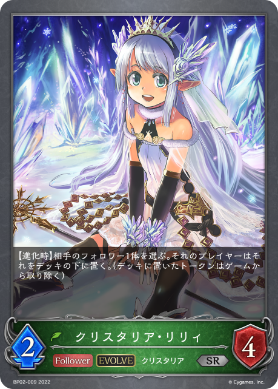
+2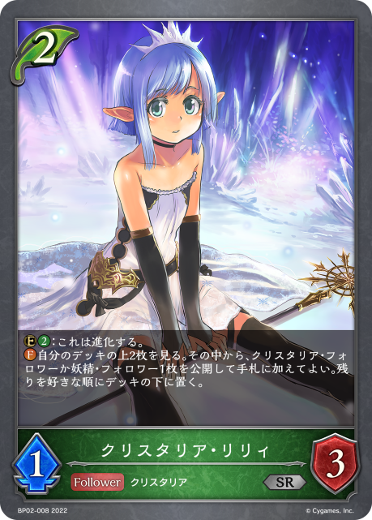
+2+1+1+1-2-2-1-1-1+1+1+1-1-1-1+2+2+1+1+1-2-2-1-1-1+1+1+1-1-1-1-1-1+1+1+1+1-1-1-1-1+2+2+1+1+1-2-2-1-1-1+1-1-1+2+2+1+1+1-2-2-1-1-1+2+2+2+2+1-2-2-2-1-1-1+2+2+1+1-2-2-1-1+3+2+1-2-2-1-1+3+2+1+1+1-1-1-1+2+2+1-2-2-1+3+3+2+2+2+1-3-2-2-2-1+2+2+1-2-2-1+3+2+1-1-1-1-1-1-1+2+2+1+1+1-2-2-1-1-1+1-1+3+3+2+2+1+1-2-2-1-1-1+1+1+1-2-1-1+2+1+1+1+1+1+1+1-2-2-2-1-1-1+3+2+2-2-2-1-1-1+2+2+1+1+1-2-2-1-1-1+2+2+1+1-2-2-1-1+3+2+2+1+1+1-3-2-1-1+2+1-1-1-1+2+2+2+2+1-2-2-2-1-1-1+3+3+2-2-2-1-1-1-1+3+2+1-2-2-1-1+3+2+1-2-2-1-1+1+1+3+3 +2
+2 +2+1-2-2-1-1+2+2+1-2-2-1+2+2+2+2+1-2-2-2-1-1-1+2+2+1-2-2-1-1+2+2+2+2+1-2-2-1-1-1-1-1+1+1+1+1-1-1+2+1+1+1-3-3-3-3-1-1+1+1+1-1-1-1+3+3+2+2+2+2+1-2-2-2-1-1-1-1
+2+1-2-2-1-1+2+2+1-2-2-1+2+2+2+2+1-2-2-2-1-1-1+2+2+1-2-2-1-1+2+2+2+2+1-2-2-1-1-1-1-1+1+1+1+1-1-1+2+1+1+1-3-3-3-3-1-1+1+1+1-1-1-1+3+3+2+2+2+2+1-2-2-2-1-1-1-1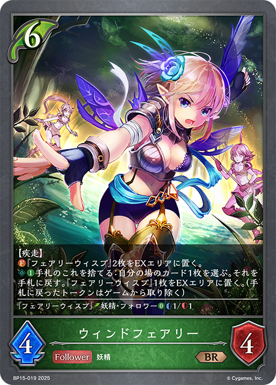
+1+1+3+2+1+1+1-2-2-2-1-1+2+2+1-2-2-1+2+2+1+1+1-2-1-1-1-1-1+2+2+1-2-2-1+3+2+2+1+1-2-2-2-1-1-1+2+2+1-2-2-1+3+3+3 +2+2+2+1+1-3-2-2-2-2-1-1-1+1+1+1+1-1-1-1+2+2+2+1+1-2-2-1-1-1-1+2+2+1-2-2-1
+2+2+2+1+1-3-2-2-2-2-1-1-1+1+1+1+1-1-1-1+2+2+2+1+1-2-2-1-1-1-1+2+2+1-2-2-1| 图片 | 平均张数 | 使用率 | 0张比例 | 1张比例 | 2张比例 | 3张比例 |
|---|---|---|---|---|---|---|
|
3.00 | 100.0% | 0.0% | 0.0% | 0.0% | 100.0% |
|
3.00 | 100.0% | 0.0% | 0.0% | 0.0% | 100.0% |
|
2.99 | 100.0% | 0.0% | 0.0% | 0.7% | 99.3% |
|
2.99 | 100.0% | 0.0% | 0.0% | 1.5% | 98.5% |
|
2.98 | 100.0% | 0.0% | 0.0% | 1.8% | 98.2% |
|
2.02 | 100.0% | 0.0% | 0.0% | 98.2% | 1.8% |
|
2.92 | 98.9% | 1.1% | 0.4% | 3.6% | 94.9% |
|
2.95 | 98.2% | 1.8% | 0.0% | 0.0% | 98.2% |
|
2.93 | 97.8% | 2.2% | 0.4% | 0.0% | 97.5% |
|
2.92 | 97.8% | 2.2% | 0.0% | 1.5% | 96.4% |
|
2.70 | 93.1% | 6.9% | 0.0% | 9.1% | 84.0% |
| 2.04 | 91.6% | 8.4% | 0.7% | 69.1% | 21.8% | |
|
1.60 | 88.7% | 11.3% | 20.7% | 64.4% | 3.6% |
| 0.83 | 77.1% | 22.9% | 70.9% | 6.2% | 0.0% | |
|
1.04 | 49.1% | 50.9% | 2.5% | 38.5% | 8.0% |
|
0.87 | 38.2% | 61.8% | 1.1% | 25.5% | 11.6% |
|
0.63 | 37.1% | 62.9% | 16.4% | 16.0% | 4.7% |
| 0.37 | 33.8% | 66.2% | 30.9% | 2.9% | 0.0% | |
|
0.28 | 14.2% | 85.8% | 3.6% | 7.3% | 3.3% |
| 0.13 | 12.7% | 87.3% | 12.0% | 0.7% | 0.0% | |
|
0.08 | 5.1% | 94.9% | 2.5% | 2.5% | 0.0% |
|
0.12 | 4.7% | 95.3% | 0.7% | 0.4% | 3.6% |
|
0.07 | 4.0% | 96.0% | 1.5% | 2.2% | 0.4% |
| 0.07 | 2.2% | 97.8% | 0.0% | 0.0% | 2.2% | |
| 0.07 | 2.2% | 97.8% | 0.0% | 0.0% | 2.2% | |
|
0.05 | 2.2% | 97.8% | 0.4% | 0.7% | 1.1% |
| 0.05 | 1.8% | 98.2% | 0.0% | 0.0% | 1.8% | |
| 0.05 | 1.8% | 98.2% | 0.0% | 0.4% | 1.5% | |
|
0.04 | 1.8% | 98.2% | 0.0% | 1.5% | 0.4% |
|
0.03 | 1.8% | 98.2% | 1.1% | 0.7% | 0.0% |
|
0.02 | 1.5% | 98.5% | 1.1% | 0.4% | 0.0% |
| 0.01 | 1.5% | 98.5% | 1.5% | 0.0% | 0.0% | |
| 0.02 | 1.1% | 98.9% | 0.0% | 1.1% | 0.0% | |
| 0.01 | 0.7% | 99.3% | 0.0% | 0.7% | 0.0% | |
|
0.01 | 0.7% | 99.3% | 0.4% | 0.4% | 0.0% |
|
0.01 | 0.7% | 99.3% | 0.7% | 0.0% | 0.0% |
|
0.01 | 0.4% | 99.6% | 0.0% | 0.0% | 0.4% |
| 0.01 | 0.4% | 99.6% | 0.0% | 0.0% | 0.4% | |
|
0.01 | 0.4% | 99.6% | 0.0% | 0.0% | 0.4% |
|
0.01 | 0.4% | 99.6% | 0.0% | 0.0% | 0.4% |
| 0.01 | 0.4% | 99.6% | 0.0% | 0.4% | 0.0% | |
|
0.01 | 0.4% | 99.6% | 0.0% | 0.4% | 0.0% |
|
0.01 | 0.4% | 99.6% | 0.0% | 0.4% | 0.0% |
|
0.01 | 0.4% | 99.6% | 0.0% | 0.4% | 0.0% |
|
0.01 | 0.4% | 99.6% | 0.0% | 0.4% | 0.0% |
|
0.01 | 0.4% | 99.6% | 0.0% | 0.4% | 0.0% |
|
0.01 | 0.4% | 99.6% | 0.0% | 0.4% | 0.0% |
| 0.00 | 0.4% | 99.6% | 0.4% | 0.0% | 0.0% | |
| 0.00 | 0.4% | 99.6% | 0.4% | 0.0% | 0.0% | |
| 0.00 | 0.4% | 99.6% | 0.4% | 0.0% | 0.0% | |
| 0.00 | 0.4% | 99.6% | 0.4% | 0.0% | 0.0% | |
| 0.00 | 0.4% | 99.6% | 0.4% | 0.0% | 0.0% | |
|
0.00 | 0.4% | 99.6% | 0.4% | 0.0% | 0.0% |
| 0.00 | 0.4% | 99.6% | 0.4% | 0.0% | 0.0% | |
| 0.00 | 0.4% | 99.6% | 0.4% | 0.0% | 0.0% |
| 图片 | 平均张数 | 使用率 | 0张比例 | 1张比例 | 2张比例 | 3张比例 |
|---|---|---|---|---|---|---|
|
2.93 | 100.0% | 0.0% | 0.0% | 6.9% | 93.1% |
|
2.56 | 98.2% | 1.8% | 0.0% | 38.5% | 59.6% |
| 1.79 | 91.6% | 8.4% | 4.4% | 87.3% | 0.0% | |
|
0.95 | 48.7% | 51.3% | 4.0% | 42.9% | 1.8% |
|
0.75 | 38.2% | 61.8% | 1.8% | 36.4% | 0.0% |
|
0.48 | 37.8% | 62.2% | 27.6% | 9.8% | 0.4% |
|
0.24 | 14.5% | 85.5% | 5.1% | 9.1% | 0.4% |
|
0.09 | 4.0% | 96.0% | 1.1% | 1.1% | 1.8% |
| 0.06 | 2.2% | 97.8% | 0.0% | 0.4% | 1.8% | |
| 0.05 | 1.8% | 98.2% | 0.0% | 0.0% | 1.8% | |
| 0.02 | 1.8% | 98.2% | 1.8% | 0.0% | 0.0% | |
|
0.02 | 1.8% | 98.2% | 1.8% | 0.0% | 0.0% |
| 0.01 | 0.4% | 99.6% | 0.0% | 0.4% | 0.0% | |
| 0.01 | 0.4% | 99.6% | 0.0% | 0.4% | 0.0% | |
| 0.01 | 0.4% | 99.6% | 0.0% | 0.4% | 0.0% | |
|
0.01 | 0.4% | 99.6% | 0.0% | 0.4% | 0.0% |
|
0.01 | 0.4% | 99.6% | 0.0% | 0.4% | 0.0% |
| 0.00 | 0.4% | 99.6% | 0.4% | 0.0% | 0.0% | |
|
0.00 | 0.4% | 99.6% | 0.4% | 0.0% | 0.0% |
| 0.00 | 0.4% | 99.6% | 0.4% | 0.0% | 0.0% | |
|
0.00 | 0.4% | 99.6% | 0.4% | 0.0% | 0.0% |